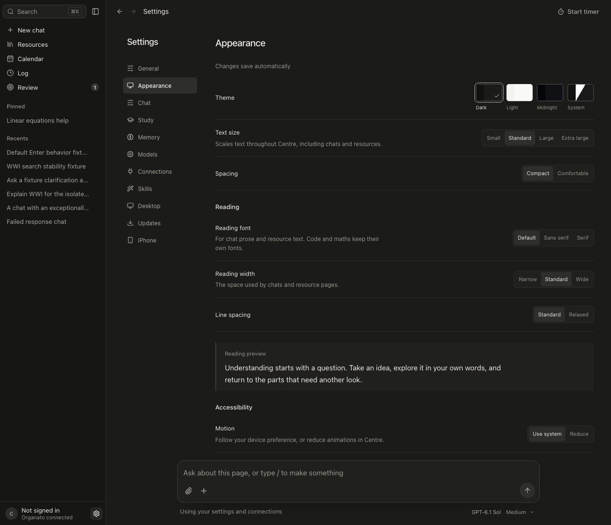

More useful settings, reliable saves, and fixes across chat, resources, calendar and sync.

Ten new preferences: reading font, width, spacing, motion, contrast, send shortcut, activity display, greetings and flashcard sizing. Four text sizes, including Extra large, plus a preference-only reset.
Slow requests no longer overwrite newer preferences. Failed disk saves leave settings unchanged. Failed forms retain drafts, and cancelled exports no longer show success.
Resource retries retain your choices after restart and recover an already saved result while AI is offline. Search stays stable, keyboard actions behave, and modal drafts survive Cmd-K.
Correct session durations and archive handling, quieter background retries, and preserved grading results. iPhone gains canonical preferences, safer offline edits and text-size propagation.
Normal clicks worked in the fixture. A separate save race could revert a newer size and was reproduced and fixed. All four sizes were then checked on chat and resource text, including Standard reset and reload.
iOS core checks pass, but full Xcode and simulator UI were unavailable. Live sign-in/providers, signed updates, native Save panels/PDF and screen-reader behavior remain unverified. This is not a claim that every native button was exercised.
Cloud validators must be updated before distributing the new preferences. Main integration was authorized; no local installation or cloud deployment was performed.
Screenshots use disposable fixtures. GPT-6.1 Sol and GPT-6 Astra authored fixes; Claude Opus 5.5 reviewed design before the usage-limit handoff.